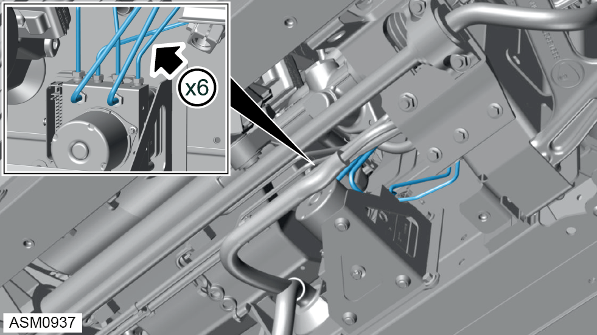

ABS Module
Print
Operation Code: 33.03.12-02
Removal
- Remove front undertray. Refer to procedure.
- Disconnect harness connector from vehicle dynamics domain master (VDDM) module.
- Remove M6 nut securing ground cable to vehicle.
- Remove ground cable and move harness aside.

- Label brake pipes (x6) connected to VDDM module
- Remove union nuts (x2) securing inlet brake hoses to VDDM module. Torque 18 Nm.
 CAUTION: Plug pipe connections to prevent fluid loss and ingress of moisture or dirt.
CAUTION: Plug pipe connections to prevent fluid loss and ingress of moisture or dirt.
CAUTION: If brake fluid is spilt on the paintwork wash off immediately with clean water.
CAUTION: Brake fluid will discharge from brake hose when removing union nut. Use a container to collect brake fluid.
- Remove inlet brake hoses (x2).
- Remove union nuts (x4) securing outlet brake hoses to VDDM module. Torque 16 Nm.
CAUTION: Plug pipe connections to prevent fluid loss and ingress of moisture or dirt.
CAUTION: If brake fluid is spilt on the paintwork wash off immediately with clean water.
CAUTION: Brake fluid will discharge from brake hose when removing union nut. Use a container to collect brake fluid.
- Remove brake outlet hoses (x4).
- Remove M8x20 bolts (x3) securing VDDM module bracket to vehicle. Torque 24 Nm.
- Remove VDDM module.
Do not carry out further disassembly if removing for access only.
- Remove F10x20 torx bolt securing VDDM module to bracket. Torque 27 Nm.
- Remove VDDM module.
Installation
- Installation is the reverse of removal procedure except for the following:
- Calibrate replacement module using Lotus Insight tool.
- Bleed brakes using Lotus Insight tool.